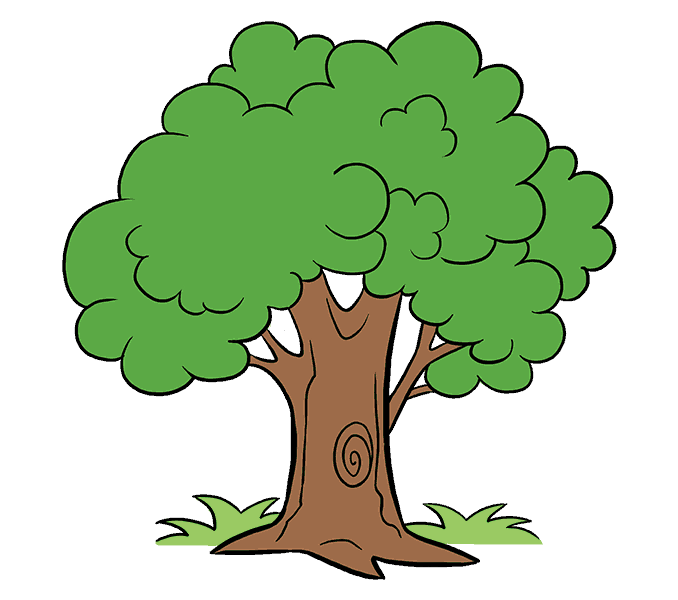
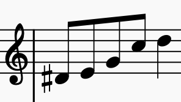
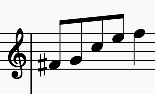
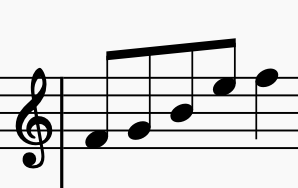

SHucK ~> Structured Harmony in ChucK
SHucK is a toolkit built in ChucK for developers to easily implement scales, chords, and voice leadings.
SHucK is based on Harmonia, the scientific musical calculator created by Brendan Zelikman.
Installing SHucK
To install SHucK, use Chump (for now, use this secret download link and reference types/tree.ck):
chump install shuck
What is Structured Harmony?
Structured Harmony is a fancy term that refers to the hierarchical organization of scales, chords, subscales, subchords, and so on.
Why use Structured Harmony?
You are probably using it already!
Most Western music is based on hierarchical relationships between notes.
For example, it is common to think of a C major chord nested within a C major scale,
that itself might be nested within a chromatic scale.
What are you talking about?
Tough start, I know. Consider this example:
This figure is deceptively complex but decomposable into three layers of structure.
Layer 1: C major chord.
Notes 2-4 (E,G,C) are consecutive steps derived from a C major chord.
Layer 2: C major scale.
Note 5 (D) takes the preceding chord tone (C) and moves it one step up the C major scale.
Layer 3: Chromatic scale.
Note 1 (D#) takes the succeeding chord tone (E) and moves it one step down the chromatic scale.
...And?
We don't have good ways of representing these kinds of structures! A common development of this figure might be this:
->
Without the right framework, this transformation is incomprehensible:
"Move D# up 3 steps, E up 3 steps, G up 5 steps, C up 4 steps, and D up 3 steps"
Tell a computer to move a D# along a C major scale and its motherboard will combust.

->
Wrong, MuseScore, wrong!